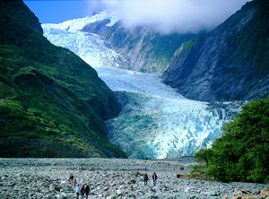
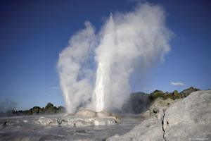

Activities and Tourism
(April 2010)
On this page you will find –
- Information specific to Christchurch and Cheviot
- Related activities
- Information about New Zealand
- Tourism in the South Isand; where to go and what to see and do
- Tourism in the North Island
- Tourism website links
The entry point for most participants into the South Island will be Christchurch which with a population of about 350,000 is the largest city in the South Island. We hope that you will take the opportunity to spend a few days to unwind and to explore the city. Why not arrive early or stay after the Rogaine to explore and experience the stunning South Island.
About Christchurch
Christchurch, sitting on the Canterbury plains, is a flat city of many parks, reserves and gardens with a backdrop of the picturesque Port Hills rising to 500m. To the east the city is bounded by the sandy beaches of the Pacific Ocean. Across the plains to the West within a drive of an hour are the Canterbury foothills and the Southern Alps which rise to nearly 2000 metres. There are many walks and mountain bike trails in the Port Hills, with magnificent views of the city and harbour, only ten minutes drive from the city center.
Christchurch has an active arts and cultural scene, with festivals, live music and acts including visiting overseas artists, a professional theatre company, a symphony orchestra, and opera and ballet companies. The cultural precinct, a few minutes walk from the centre of the city includes the Museum, the Art Gallery, the vibrant Christchurch Arts Centre with its weekend market and international food stalls, and the Botanical Gardens. Cafes, bars, and shops, are plentiful throughout the city.
From the city it's an easy drive to the beach, the historic French town of Akaroa on Banks Peninsula, Hanmer hot springs, the rugged bush of Arthurs Pass National Park, Kaikoura and its whales, or the many wineries not far out of the city.
See the following websites for suggestions on what to see and do in Christchurch and the surrounding areas – Christchurch City Promotions, A guide to Christchurch, Christchurch and Canterbury Tourism, Christchurch City Council, and Sports Destination Christchurch.
About Cheviot
The event centre is located in Cheviot, a small rural town of about 400 people in the Hurunui district, 120 kms (allow 100 mins driving time) north of Christchurch city. A further 1000 people live in the surrounding area and villages serviced by the town. It is predominantly a pastoral farming area of primarily sheep, but also cattle and deer. While in Cheviot visit the Museum for a brief look at the local history.
Cheviot is located on the Alpine Pacific Triangle, a compact tourism route that includes the rugged Kaikoura Coast (fishing excursions and whale watch), Hanmer Springs (natural hot spa pools, walking and mountain biking) and Waipara vineyards and wineries. The inland road from Waiau to Kaikoura follows a tectonic plate boundary.
top
Activities
Model Course
To familiarise competitors with terrain and vegetation typical of that for the WRC a model course will be available. This will be about 80 km north of Christchurch (50km south of Cheviot) in an area having very similar characteristics to the championship course. It will be open and supervised from 10:00 to 16:00 hrs on the Wednesday and Thursday prior to the event. You can walk or run around and do as much of the course as you are happy with. The mapping standard will be similar to that for the event.
Information on the Model Course (PDF version) is available.
Walks and Training
There are many places to go for exercise pre-event. Some suggestions are the Port Hills walking tracks above Christchurch City (you may wander at will cross-country in the Reserves marked on the map), Banks Peninsula tracks, Kaikoura tracks, and Hanmer Springs tracks. The Department of Conservation (DOC) website lists an almost bewildering array of tracks and walks, and other activities, throughout New Zealand.
If you Google “walks” in New Zealand you may find some that are guided and a few days in duration. These walks offer a wilderness experience within a sociable group. Some of you might be interested in these but for training and a vigorous workout look for the freedom walks. If you want an extended walk they are often called “tramps” or hikes. For all walks we ask that you read and take note of the comments on weather and safety on the DOC website.
Note that all tracks within the region of the WRC course are embargoed.
Events
Events of potential interest to WRC participants that we become aware of will be advertised here.
- The Great Forest Rogaine
- The Rotorua Orienteering Club is organising an 8 hr foot-rogaine (and a 6 hr MTB-rogaine) Saturday, 6th November 2010. Rotorua, in the central North Island geothermal area, is renowned for its hot mud pools, geysers, and steam bursting forth everywhere. Add the attraction of a rogaine followed by a soak in a natural hot spa pool and this is an area that is well worth a visit. More information is available on the event website.
- The Rotorua Orienteering Club is organising an 8 hr foot-rogaine (and a 6 hr MTB-rogaine) Saturday, 6th November 2010. Rotorua, in the central North Island geothermal area, is renowned for its hot mud pools, geysers, and steam bursting forth everywhere. Add the attraction of a rogaine followed by a soak in a natural hot spa pool and this is an area that is well worth a visit. More information is available on the event website.
- The Christchurch-based Orienteering club, Peninsula and Plains Orienteers, (PAPO) may have an event close to the WRC. Their calendar is available on the PAPO website.
- The following websites have useful event calendars
About New Zealand
New Zealand is a young nation with a unique and dynamic culture. It is a diverse country with a distinctly Pacific culture, renowned for its friendly people and breathtaking scenery. The culture of its indigenous Maori people affects the language, the arts, and even the accents of all New Zealanders.
Few countries can combine such stunning rugged landscapes, gorgeous beaches, spectacular geothermal and volcanic activity, a temperate climate and a fascinating animal and plant life in such a small area. The great advantage of New Zealand is there are many different landscapes, environments, and ecosystems very close to each other. Because of its prolonged isolation from the rest of the world New Zealand has a unique range of bird and plant life.
New Zealand is renowned for its range of adventure activities. You can experience
 |
| Bungy swan dive, Kawarau Bridge (Tourism NZ) |
- bungy jumping in the country where it was invented.
- white water rafting in the remote gorges of the South Island
- the thrill of jet boat riding in the braided rivers of Canterbury, where these boats were invented and developed, or the gorges of Otago.
- guided ice-climbing on the glaciers of South Westland
- sea kayaking in the Abel Tasman National Park at the northern tip of the South Island
- walking and mountaineering in many places
- mountain biking on a diverse range of trails
- swimming with dolphins in Akaroa Harbour or whale watching off Kaikoura
- and more
All these activities take place in regions of stunning scenery. Google with appropriate keywords to reveal many choices or consult the DOC website for starters.
top
Tourism in the South Island
 |
| Franz Josef Glacier (Photo: Gareth Eyres) |
New Zealand, and particularly the South Island, is internationally recognized for its spectacular scenery. The Southern Alps rise to over 3700 metres within 40 kms of the West Coast, and have heavy glaciation.
The drive from Nelson down the rugged West Coast to Wanaka, visiting the Franz Josef and Fox Glaciers on the way, is unique. The drive through Murchison shows the scars of very recent earthquake activity, as you travel down a Continental Plate boundary.
On the eastern side of the Alps there are several large lakes, and a dry climate. Mt. Cook, Wanaka, Queenstown, and further south, Milford Sound in Fiordland, are very popular tourist destinations.
There are also several "Great Walks" in the south; these include the Kepler, Milford, Routeburn, and Tuatapere Hump Ridge Tracks. Each is a 2-4 day walk through spectacular mountain scenery. Booking is essential, and can be done through the Tourism Board or the Department of Conservation.
The Queen Charlotte Track in the Marlborough Sounds is an appealing coastal trail that winds its way through forest while offering glimpses of sparkling inlets, and the Abel Tasman Coastal Track in Nelson is a popular track offering a mix of forest walking, golden sand beaches and water taxis to transport walkers into the park.
Also impressive is the drive through the Southern Alps via either Arthurs Pass or Lewis Pass. Arthurs Pass in particular travels through the deep and rugged Otira Gorge, as the road drops 500 metres in 4 kms.
top
Tourism in the North Island
The North Island is rich in Maori culture, beautiful beaches and unique geothermal activity. Its northern location means it has a warmer, more temperate climate than the South Island and it is much more heavily populated with 75% of New Zealand’s population residing there. Auckland, also known as the 'City of Sails' reflecting its water-based recreation, is the major visitor gateway while Wellington is New Zealand's capital city.
 |
| Geothermal Rotorua (Photo: Chris McLennan) |
The northern areas of the North Island enjoy a sub-tropical climate. The centre of the island is primarily a volcanic landscape with vast forests, volcanic peaks, and picturesque lakes. Rotorua is a major geothermal area where steam issues from parks, pathways and streets, mud pools boil, and the scent of sulphur is forever present.
The volcanic mountains of the Central Plateau near Taupo are unmistakable reminders of the landscape's turbulent past. Lake Taupo, New Zealand’s largest lake at 619 square kilometres, was created by a gigantic volcanic eruption.
For information on the North Island start with The New Zealand Tourism Guide.
top
Tourism Websites
- Tourism New Zealand
- New Zealand Tourism Guide
- Automobile Association of New Zealand
- Touring New Zealand
- Christchurch and Canterbury Tourism
- Christchurch the Garden City
- Alpine Pacific Triangle
- Christchurch International Airport
- Sports Destination Christchurch
- Department of Conservation
Enquiries
If you have any queries about any of the above information first check out the Forum in case someone else has had the same query. If you cannot find the answer there then post your enquiry on the Forum or email the organisers.